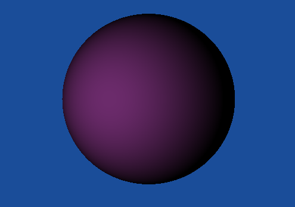
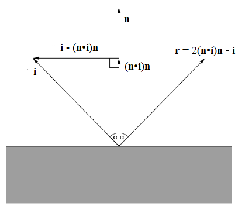
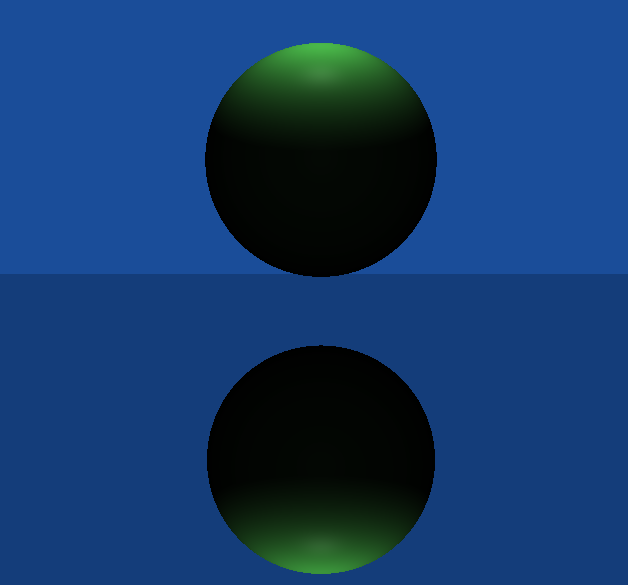

Raytracing
Il ray tracing è una tecnica di rendering in grado di produrre immagini virtuali con un elevato livello di realismo,
pur basandosi su un principio molto semplice. L'idea è quella di seguire il percorso della luce all'interno della scena,
che parte da una sorgente luminosa e interagisce con l'ambiente circostante
(attraverso fenomeni fisici come rifrazione, riflessione, diffusione....)
prima di raggiungere il nostro occhio, rendendo quindi visibili gli oggetti.
In realtà, a livello computazionale è molto più efficiente seguire questo percorso in direzione opposta, immaginando
che il raggio di luce parta dal nostro occhio, poichè solo una piccola parte dei raggi emessi da una sorgente luminosa
raggiunge effettivamente l'occhio.
Questo approccio prende in particolare il nome di backward ray tracing.
Per creare un immagine digitale 2D formata da pixel, un raggio di questo tipo (detto primary o view ray) viene
creato per ciascuno dei pixel. Se tale raggio interseca (visibility problem) un oggetto della scena, è possibile quindi calcolare
l'illuminazione di tale oggetto nel punto di intersezione (procedimento che prende il nome di shading) ed assegnare
il colore risultante al pixel d'interesse.

Shading
Il modo in cui viene calcolata l'illuminazione di un punto della scena dipende principalmente dalle proprietà del materiale di cui è composto l'oggetto che stiamo guardando, che determinano il modo in cui la luce interagisce con esso. Dal punto di vista della riflessione, possiamo identificare tre tipi di riflessione:
- Rifflessione speculare: si ottiene attraverso la legge della riflessione, che afferma
- Il raggio di incidenza, la normale alla superficie e il raggio riflesso sono coplanari;
- L'angolo di incidenza è uguale all'angolo di riflessione.
- Riflessione diffusa: si ha quando la luce proveniente da una direzione viene riflessa in molteplici direzioni diverse, invece che essere concentrata in un'unica direzione come succede nel caso della riflessione speculare. Questo tipo di riflessione è evidente negli oggetti detti opachi. Per un oggetto opaco ideale, la luce incidente viene riflessa equamente in tutte le direzioni, ne consegue quindi che l'illuminazione percepita non cambia al variare della direzione da cui guardiamo l'oggetto (view direction). Questo tipo di superficie ideale è anche nota come superficie Lambertiana.
Il programma prevede tre tipi di oggetti, a seconda del modo in cui interagiscono con la luce:
- Oggetti diffuse (opachi, o diffondenti)
- Oggetti Phong (seguono il modello di Phong)
- Oggetti mirror-like (specchi)
- Oggetti trasparenti (e.g.: acqua, vetro, ...)
Fonti luminose
Sono previsti due tipi di fonti luminose:
- Luci puntiformi (o luci sferiche): definite unicamente dalla loro posizione nello spazio (non sono influenzate da rotazioni o scalature, in quanto adimensionali). Utili per rappresentare piccole fonti di luce come lampadine, di cui però viene ignorata la "fisicità" per maggiore semplicità.
- Luci distanti: definite unicamente dalla loro direzione (non sono influenzate da traslazioni o scalature). Utili per rappresentare fonti luminose molto distanti, come il Sole, per cui si possono considerare tutti i raggi emessi come paralleli tra loro.
Square rolloff
Per le luci sferiche , l'illuminazione dipende anche dalla distanza a cui un oggetto si trova. Più precisamente, si può considerare una luce sferica puntiforme come una fonte luminosa isotropa, che emette luce in maniera uguale in tutte le direzioni. In tal caso, si può applicare la seguente legge di proporzionalità:\(I = \frac{P}{4\pi r^{2} }\)
Dove \(I\) è l'intensità luminosa, \(r\) è la distanza dalla sorgente e \(P\) è la potenza totale.
Illuminazione su superfici lambertiane
La legge di Lambert afferma che l'illuminamento prodotto da una sorgente su una superficie è direttamente
proporzionale all'intensità luminosa della sorgente e al coseno dell'angolo che la normale alla superficie forma
con la direzione dei raggi luminosi.
\( E = I\cdot \cos \alpha = I \cdot \textbf{n} \boldsymbol{\cdot}\textbf{l} \)
Dove \(\textbf{n} \) è il versore normale alla superficie, mentre \(\textbf{l} \) è il versore della direzione
dei raggi luminosi.
.Più precisamente, per una luce puntiforme \( \textbf{l} = \frac{\textbf{P}_{light} - \textbf{P}_{hit}}
{\left \| \textbf{P}_{light} - \textbf{P}_{hit}\right \|} \), dove \(\textbf{P}_{hit} \) è il punto
considerato sulla superficie, mentre \( \textbf{P}_{light}\) è il punto che identifica la posizione di una sorgente
luminosa puntiforme. Per una luce distante, invece, la direzione è una proprietà intrinseca della sorgente luminosa.
L'intensità luminosa che compare nella formula, \( I \), è calcolata per le sorgenti puntiformi utilizzando la legge inversa
del quadrato descritta precedentemente, mentre per le luci distanti si utilizza direttamente l'intensità luminosa alla
sorgente.
L'intensità luminosa della superficie dipende poi, ovviamente, anche da quanta della luce ricevuta viene riflessa
nelle varie direzioni e da quanta viene invece assorbita. Il rapporto tra la quantità di luce emessa e quella ricevuta
è detta albedo.
Quindi, l'ammontare totale di energia luminosa riflessa dalla superficie diffondente è dato da:
\( F_{tot} = albedo \cdot E = albedo \cdot I\cdot \cos \alpha \)
Poichè questa energia viene distribuita uniformemente su un emisfero centrato sul punto osservato ed orientato
nella direzione della normale alla superficie, per ottenere la quantità di luce riflessa nella direzione della visuale
bisogna dividere per \( \pi \).
\( L = \frac{F_{tot}}{\pi} \)
Come anticipato, la quantità di luce riflessa è indipendente dalla direzione della visuale.

Riflessione speculare
Usando la legge della riflessione, date la direzione incidente \( \textbf{l} \) e la normale \( \textbf{n} \) (si assume entrambi siano vettori di norma unitaria) è facile calcolare la direzione della riflessione:\( \textbf{r} = 2(\textbf{n}\cdot \textbf{i})\textbf{n} - \textbf{i} \)

A livello implementativo, quando la direzione della visuale interseca una superficie riflettente, calcoliamo la direzione di riflessione e generiamo un nuovo "raggio", avente come origine il punto di intersezione e come direzione quella di riflessione. Questo raggio può potenzialmente intersecare a sua volta una superficie riflettente, di conseguenza il processo è ricorsivo. Potenzialmente, una scena potrebbe causare una ricorsione infinita, o comunque generare un numero così elevato di riflessioni da rendere la computazione molto lenta (senza particolari miglioramnti dal punto di vista del realismo dell'immagine ottenuta). Per questo motivo, si definisce una costante che limita il numero massimo di livelli che può raggiungere questo procedimento ricorsivo (le immagini di esempio sono state generate usando come limite 5 livelli).
